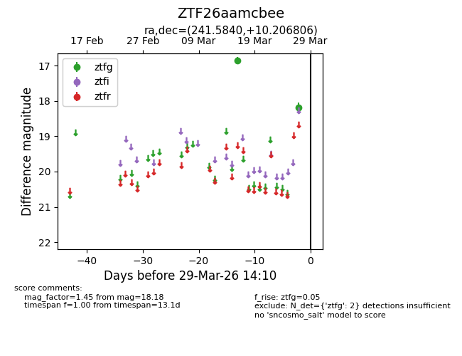
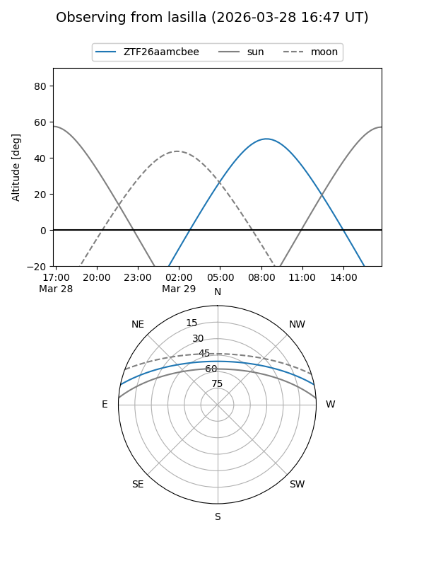
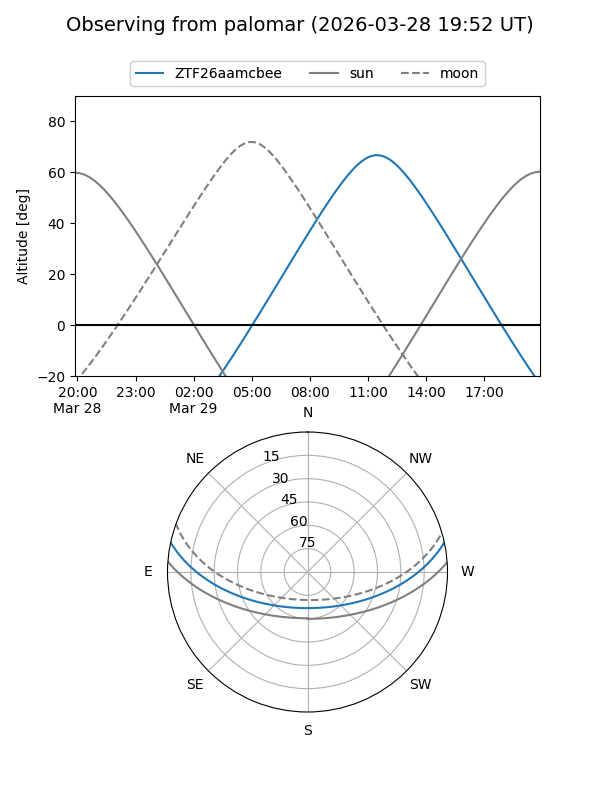

ZTF26aamcbee
Target ZTF26aamcbee at 2026-03-29 14:13
Aliases and brokers:
FINK: link
Lasair: link
ALeRCE: link
alt names
ZTF26aamcbee (ztf,fink_ztf)
Coordinates:
equatorial (ra, dec) = 241.5840,+10.20681
equatorial (HMS+DMS) = 16:06:20.16,+10:12:24.50
galactic (l, b) = (22.3384,+41.19449)
Flags:
Photometry:
last ztfg=18.18
2 ztfg detections
Lightcurve

Visibility


Additional plots